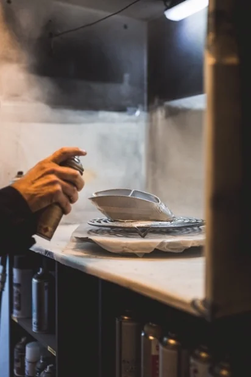
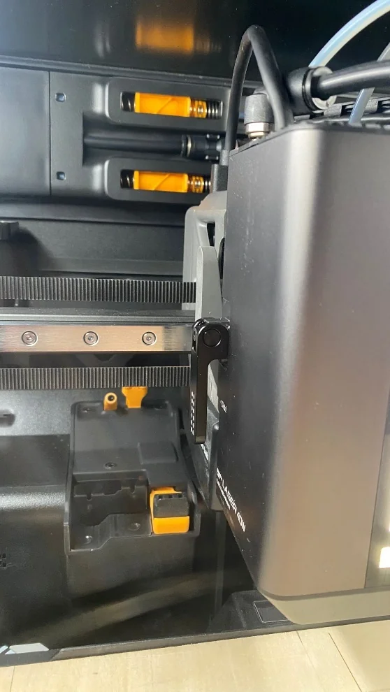
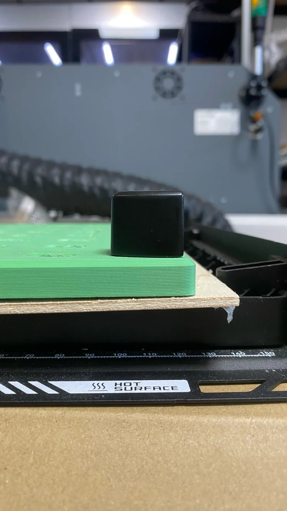
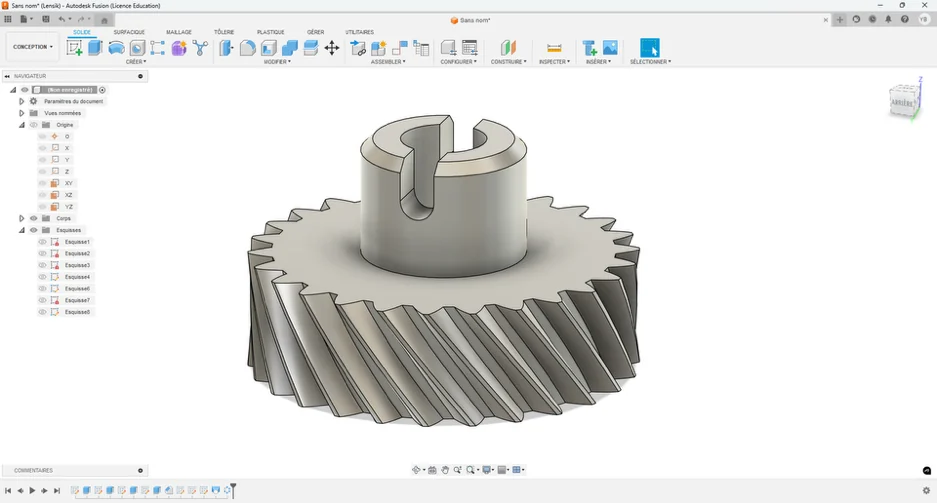
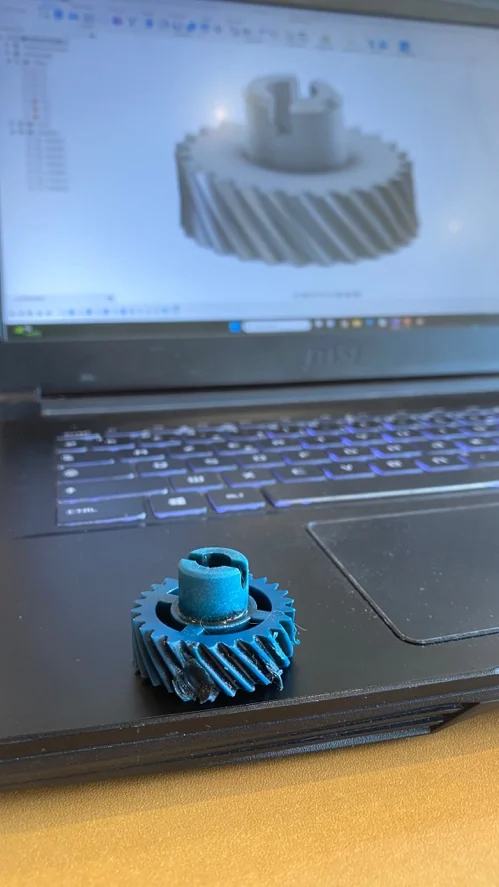

Engineering internship
Making replacement parts at GRYP 3D
A first industrial internship in automotive additive manufacturing: finishing printed parts, scanning original components and learning how a production workshop operates.
- Context
- GRYP 3D · Bordeaux, France
- Period
- 23 Jun – 18 Jul 2025
- My role
- Manufacturing intern
- Focus
- 3D scanning · Fusion 360 · Post-processing

Inside an additive-manufacturing workshop
During four weeks at GRYP 3D in Bordeaux, I saw how replacement automotive parts are produced when originals are rare or no longer available. My work ranged from finishing production parts and maintaining printers to scanning an original component, modelling a small mechanism and documenting a new laser process.


From the original part to a usable replacement
Production and post-processing
I removed supports, sanded resin, FDM and carbon-reinforced prints, and prepared surfaces for copper and nickel electroplating. Those tasks taught me that surface finish, dimensional fit and handling are part of making a component useful, not merely cosmetic steps.
Scanning and reverse engineering
For a Ferrari 400i headlight cover, I placed scanning references, aligned multiple acquisitions and cleaned noise from the mesh. The process made clear why a scan is the start of reverse engineering rather than an automatic finished CAD model.
Rebuilding a dashboard gear
I learned Fusion 360 while reconstructing a small dashboard gear. Its tooth geometry had to mesh with existing parts, so I used the original assembly as the constraint rather than drawing an isolated shape.


Making a new process repeatable
I investigated a Bambu Lab H2D laser module, tested settings across materials and wrote an operating guide for the team. The aim was to record the setup and parameters clearly enough for another person to use the process and understand what changed between tests.
Alongside that work, I helped with preventive maintenance and troubleshooting on FDM and resin printers. Equipment care showed me how production reliability depends on many small routines, not only on machine specifications.
What the workshop changed for me
I learned to look at a part from the perspective of the people who scan it, print it, finish it and finally fit it to a vehicle. The technicians and engineers at GRYP 3D shared practical habits I could not have learned from CAD alone.
The internship made me more attentive to tolerances, material behaviour, surface quality and documentation. It also made me enjoy the point where a digital design becomes an object someone can actually use.